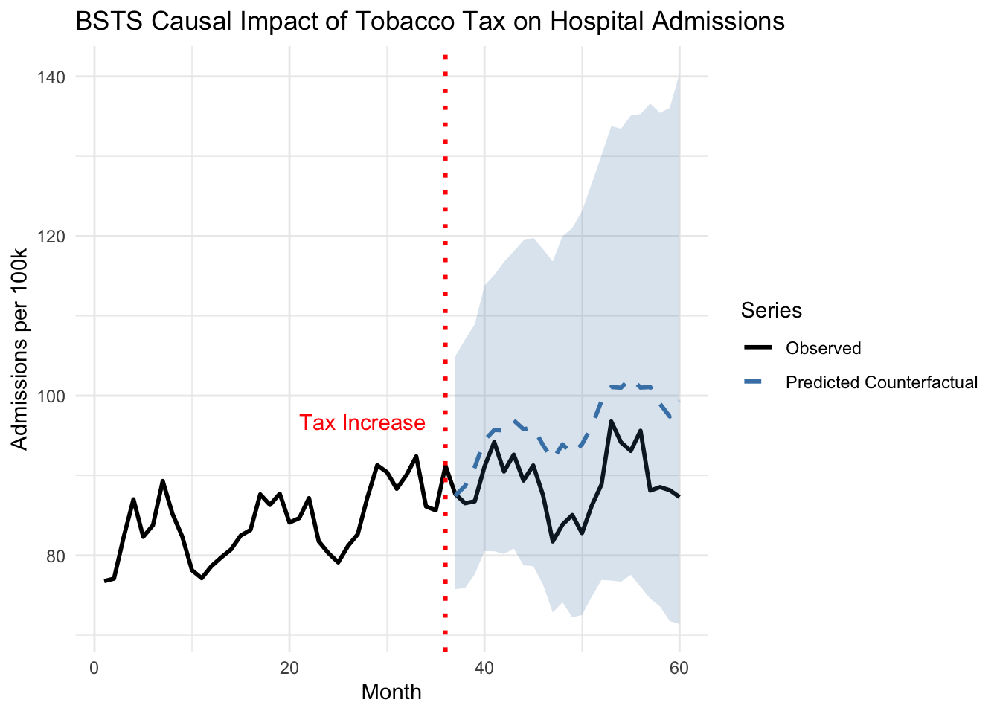

Chapter 11 G-Computation for Causal Inference
11.1 Introduction
A 55-year-old patient with hypertension visits your clinic. She’s currently on first-line antihypertensive medication, and you’re considering adding a statin for cardiovascular protection. But the decision isn’t straightforward—you need to consider not just the direct effect of the statin, but also how it might interact with her blood pressure medication, how her treatment adherence might change, and what her cardiovascular risk would look like over the next decade under different treatment strategies. Traditional clinical trial results provide average effects for populations that may not match your patient’s complex profile and treatment history.
This is where G-computation, one of the most powerful yet underutilized tools in causal inference, becomes invaluable. Developed by Jamie Robins in the 1980s, G-computation provides a general framework for estimating causal effects from observational data by explicitly modeling the data-generating process and using those models to simulate counterfactual outcomes under different treatment regimes. Unlike propensity score methods that focus on modeling treatment assignment, G-computation directly models the outcome process, enabling estimation of effects in complex longitudinal settings with time-varying treatments and confounders.
The method’s name derives from the “G-formula,” a mathematical expression that standardizes over the distribution of confounders to obtain marginal causal effects. While the theory can appear daunting, the core intuition is remarkably straightforward: if we can build good models of how treatments affect outcomes while accounting for confounding, we can use those models to predict what would have happened under different treatment strategies. By comparing predictions under different scenarios, we recover causal effects without requiring the strong parametric assumptions of traditional regression adjustment.
G-computation excels in several scenarios where other causal methods struggle. It handles time-varying treatments where treatment decisions at one time point depend on previous outcomes, a common pattern in chronic disease management where clinicians adjust medications based on evolving patient status. The method naturally accommodates mediation analysis by allowing explicit modeling of intermediate variables on the causal pathway between treatment and outcome. It provides estimates of both conditional effects for specific patient profiles and marginal effects averaged over population characteristics, offering flexibility that matches diverse research questions. Perhaps most importantly, G-computation enables estimation of effects under complex dynamic treatment regimes that would be impossible or unethical to study in randomized trials.
The theoretical foundation of G-computation rests on the potential outcomes framework and Pearl’s do-calculus, providing a rigorous basis for translating observational associations into causal statements. Consider a simple setting with treatment \(A\), outcome \(Y\), and baseline confounders \(L\). Under the potential outcomes framework, each individual has potential outcomes \(Y^{a}\) representing what their outcome would be if they received treatment level \(a\). The causal effect of treatment versus control is \(\mathbb{E}[Y^{1} - Y^{0}]\), but we face the fundamental problem of causal inference: we only observe \(Y^{A}\), the outcome under the treatment actually received.
The G-formula provides the key to identification under exchangeability, also known as unconfoundedness or no unmeasured confounding. This assumption states that conditional on measured confounders \(L\), treatment assignment is independent of potential outcomes: \(Y^{a} \perp A \mid L\) for all \(a\). Additionally, we require positivity, ensuring that every individual has positive probability of receiving each treatment level given their confounder values: \(P(A = a \mid L = l) > 0\) for all relevant \(a\) and \(l\). Under these assumptions, the G-formula expresses the marginal mean of the potential outcome as \(\mathbb{E}[Y^{a}] = \sum_{l} \mathbb{E}[Y \mid A = a, L = l] \cdot P(L = l)\).
This formula has an elegant interpretation: to compute the average outcome if everyone received treatment \(a\), we first calculate the expected outcome for each confounder pattern under treatment \(a\), then average over the actual distribution of confounders in the population. This standardization removes confounding by making treatment groups comparable with respect to confounder distributions. The causal effect becomes the difference between these standardized means under different treatment values: \(\mathbb{E}[Y^{1}] - \mathbb{E}[Y^{0}]\).
The G-formula extends naturally to longitudinal settings with time-varying treatments and confounders, where treatment history affects future confounders which in turn affect future treatment decisions. This creates time-dependent confounding that violates the assumptions of standard regression adjustment. Consider a sequence of treatment decisions \(A_0, A_1, \ldots, A_K\) and time-varying confounders \(L_0, L_1, \ldots, L_K\) measured before each treatment decision, with final outcome \(Y\) measured at time \(K+1\). The longitudinal G-formula for a treatment regime \(\bar{a} = (a_0, a_1, \ldots, a_K)\) becomes
\[\mathbb{E}[Y^{\bar{a}}] = \sum_{\bar{l}} \mathbb{E}[Y \mid \bar{A} = \bar{a}, \bar{L} = \bar{l}] \prod_{k=0}^{K} P(L_k = l_k \mid \bar{A}_{k-1} = \bar{a}_{k-1}, \bar{L}_{k-1} = \bar{l}_{k-1})\]
This formidable expression captures the sequential nature of longitudinal data where past treatments and confounders affect future covariate evolution. The formula marginalizes over all possible confounder trajectories, weighting each by its probability under the treatment regime of interest. While exact calculation requires summing over all possible covariate histories (computationally infeasible in practice), we can approximate this expectation through parametric modeling and Monte Carlo simulation.
The parametric G-formula algorithm translates the mathematical formula into a practical computational procedure through three essential steps: model specification, Monte Carlo simulation, and effect estimation. This approach requires specifying parametric models for how treatments affect outcomes and how treatments and past history affect future confounders, then using these models to simulate counterfactual trajectories under different treatment regimes.
In the model specification phase, we construct separate regression models for each time-varying component. For the outcome, we model \(\mathbb{E}[Y \mid \bar{A}, \bar{L}]\) as a function of treatment history and confounder history, typically using generalized linear models appropriate to the outcome type. For each time-varying confounder \(L_k\), we model \(P(L_k \mid \bar{A}_{k-1}, \bar{L}_{k-1})\) capturing how previous treatments and covariates affect future covariate values. These models embody our understanding of the data-generating process and need not be correct in all details—they must simply capture the relationships between treatments, confounders, and outcomes accurately enough to provide unbiased effect estimates.
The Monte Carlo simulation phase generates counterfactual datasets under different treatment regimes. Starting with the observed baseline covariates \(L_0\) for each individual, we simulate forward in time by first assigning the specified treatment value \(a_0\), then using the fitted confounder models to simulate \(L_1\) given \(a_0\) and \(L_0\), continuing this process through all time points. For each treatment regime of interest, this process generates a complete counterfactual dataset where every individual follows the same treatment strategy. By simulating the natural evolution of confounders under each treatment regime, we create synthetic comparison groups that would be exchangeable in a randomized trial.
Finally, we estimate the outcome under each regime by fitting the outcome model to each simulated dataset and averaging predictions across all individuals. The causal effect emerges from comparing these regime-specific outcome estimates. Confidence intervals accounting for both sampling variability and model estimation uncertainty require bootstrap resampling, where we repeat the entire procedure on bootstrap samples of the original data to quantify estimation uncertainty.
11.2 Case Study: Hypertension Management Over Time
We’ll explore G-computation through a realistic scenario involving management of hypertension with time-varying treatment intensity and evolving cardiovascular risk. Our goal is to estimate the effect of sustained intensive blood pressure control versus standard control on five-year cardiovascular event risk, accounting for treatment adjustments based on evolving patient status.
This simulation captures realistic features of hypertension management including treatment intensification based on blood pressure levels and risk factors, imperfect adherence that affects treatment effectiveness, blood pressure evolution depending on treatment and adherence patterns, and cardiovascular events influenced by current blood pressure, treatment, and baseline risk factors. The time-dependent confounding emerges naturally as blood pressure at time \(t\) affects treatment decisions at time \(t\) and outcomes at time \(t+1\), while past treatment affects current blood pressure.
## Loading required package: data.table## data.table 1.17.0 using 1 threads (see ?getDTthreads). Latest news: r-datatable.com
## **********
## This installation of data.table has not detected OpenMP support. It should still work but in single-threaded mode.
## This is a Mac. Please read https://mac.r-project.org/openmp/. Please engage with Apple and ask them for support. Check r-datatable.com for updates, and our Mac instructions here: https://github.com/Rdatatable/data.table/wiki/Installation. After several years of many reports of installation problems on Mac, it's time to gingerly point out that there have been no similar problems on Windows or Linux.
## **********
##
## Attaching package: 'data.table'
##
## The following objects are masked from 'package:xts':
##
## first, last
##
## The following objects are masked from 'package:reshape2':
##
## dcast, melt
##
## The following objects are masked from 'package:zoo':
##
## yearmon, yearqtr
##
## The following objects are masked from 'package:lubridate':
##
## hour, isoweek, mday, minute, month, quarter, second, wday, week, yday, year
##
## The following objects are masked from 'package:dplyr':
##
## between, first, last
##
## The following object is masked from 'package:purrr':
##
## transposeif (!require("ggplot2")) install.packages("ggplot2")
if (!require("dplyr")) install.packages("dplyr")
if (!require("betareg")) install.packages("betareg")## Loading required package: betareg## Warning: package 'betareg' was built under R version 4.5.1if (!require("survival")) install.packages("survival")
library(data.table)
library(ggplot2)
library(dplyr)
library(betareg)
library(survival)
set.seed(123)
simulate_hypertension_data <- function(n = 1000, time_points = 6) {
# Baseline characteristics
baseline <- data.frame(
id = 1:n,
age = rnorm(n, 55, 8),
diabetes = rbinom(n, 1, 0.3),
smoking = rbinom(n, 1, 0.25),
baseline_sbp = rnorm(n, 145, 15)
)
# Pre-allocate list with proper size
long_data <- vector("list", n)
for (i in 1:n) {
# Individual baseline values
sbp <- baseline$baseline_sbp[i]
treatment <- 0
adherence <- 1
# Pre-allocate data frame
individual_data <- data.frame(
id = rep(baseline$id[i], time_points),
time = 0:(time_points - 1),
age = rep(baseline$age[i], time_points),
diabetes = rep(baseline$diabetes[i], time_points),
smoking = rep(baseline$smoking[i], time_points),
sbp = numeric(time_points),
treatment = numeric(time_points),
adherence = numeric(time_points),
cvd_event = numeric(time_points),
event_time = rep(NA, time_points)
)
cvd_event_occurred <- FALSE
event_time <- NA
for (t in 0:(time_points - 1)) {
# Record current state
individual_data$sbp[t + 1] <- sbp
individual_data$treatment[t + 1] <- treatment
individual_data$adherence[t + 1] <- adherence
# CVD event (incident event only)
if (!cvd_event_occurred) {
event_prob <- plogis(-8 + 0.04 * sbp + 0.05 * baseline$age[i] +
0.8 * baseline$diabetes[i] + 0.6 * baseline$smoking[i] -
0.5 * treatment * adherence)
cvd_event_occurred <- rbinom(1, 1, event_prob) == 1
if (cvd_event_occurred) {
event_time <- t
}
}
# Record event (incident, not absorbing state for modeling)
individual_data$cvd_event[t + 1] <- as.integer(cvd_event_occurred && t == event_time)
individual_data$event_time[t + 1] <- event_time
# Update variables for next time point
if (t < time_points - 1) {
# Treatment decision (based on previous blood pressure and risk factors)
treatment_prob <- plogis(-2 + 0.03 * sbp + 0.5 * baseline$diabetes[i] +
0.3 * baseline$smoking[i])
treatment <- rbinom(1, 1, treatment_prob)
# Adherence (affected by treatment intensity)
adherence_mean <- plogis(1 - 0.5 * treatment + 0.01 * (sbp - 120))
# Transform to avoid boundary issues in beta regression
adherence <- pmin(0.99, pmax(0.01, rnorm(1, adherence_mean, 0.15)))
# Update SBP (affected by treatment and adherence)
treatment_effect <- -12 * treatment * adherence
sbp <- 0.7 * sbp + 0.3 * baseline$baseline_sbp[i] +
treatment_effect + rnorm(1, 0, 5)
sbp <- pmax(90, pmin(200, sbp))
}
}
long_data[[i]] <- individual_data
}
# Combine all individual data
data <- rbindlist(long_data)
setorder(data, id, time)
return(as.data.frame(data))
}
# Generate the dataset
cat("Simulating longitudinal hypertension data...\n")## Simulating longitudinal hypertension data...hypertension_data <- simulate_hypertension_data(n = 1000, time_points = 6)
# Create lagged variables
hypertension_data <- hypertension_data %>%
group_by(id) %>%
mutate(
sbp_lag = lag(sbp, default = first(sbp)),
treatment_lag = lag(treatment, default = 0),
adherence_lag = lag(adherence, default = 1)
) %>%
ungroup() %>%
as.data.frame()
# Display summary statistics
cat("\nDataset Summary:\n")##
## Dataset Summary:## Total observations: 6000## Number of patients: 1000## Time points: 6##
## Baseline characteristics:print(summary(hypertension_data[hypertension_data$time == 0,
c("age", "diabetes", "smoking", "sbp")]))## age diabetes smoking sbp
## Min. :32.52 Min. :0.000 Min. :0.000 Min. :102.3
## 1st Qu.:49.97 1st Qu.:0.000 1st Qu.:0.000 1st Qu.:135.2
## Median :55.07 Median :0.000 Median :0.000 Median :144.2
## Mean :55.13 Mean :0.307 Mean :0.263 Mean :144.7
## 3rd Qu.:60.32 3rd Qu.:1.000 3rd Qu.:1.000 3rd Qu.:154.6
## Max. :80.93 Max. :1.000 Max. :1.000 Max. :196.3##
## Incident CVD events by time point:event_rates <- hypertension_data %>%
group_by(time) %>%
summarise(
incident_events = sum(cvd_event),
cumulative_incidence = mean(!is.na(event_time) & event_time <= time)
)
print(event_rates)## # A tibble: 6 × 3
## time incident_events cumulative_incidence
## <int> <dbl> <dbl>
## 1 0 697 0.697
## 2 1 154 0.851
## 3 2 53 0.904
## 4 3 33 0.937
## 5 4 23 0.96
## 6 5 16 0.976##
##
## === MODEL FITTING ===fit_confounder_models <- function(data) {
# SBP model (continuous outcome)
cat("Fitting SBP model...\n")
sbp_model <- lm(sbp ~ sbp_lag + treatment + treatment_lag +
adherence + adherence_lag + diabetes + smoking + age + time,
data = data[data$time > 0, ])
# Adherence model (beta regression for bounded continuous outcome)
cat("Fitting adherence model...\n")
# Beta regression requires values in (0,1), not including boundaries
adherence_data <- data[data$time > 0 & data$adherence > 0 & data$adherence < 1, ]
adherence_model <- betareg(adherence ~ treatment + sbp_lag + diabetes + time,
data = adherence_data)
# Outcome model (logistic regression for incident events)
cat("Fitting CVD outcome model...\n")
# Only model incident events (not absorbing state)
outcome_model <- glm(cvd_event ~ sbp + treatment + adherence +
age + diabetes + smoking + time,
data = data,
family = binomial())
cat("\nModel diagnostics:\n")
cat("SBP model R-squared:", round(summary(sbp_model)$r.squared, 3), "\n")
cat("Adherence model pseudo R-squared:", round(adherence_model$pseudo.r.squared, 3), "\n")
cat("Outcome model AIC:", round(AIC(outcome_model), 1), "\n")
list(
sbp = sbp_model,
adherence = adherence_model,
outcome = outcome_model,
sbp_sigma = sigma(sbp_model)
)
}
models <- fit_confounder_models(hypertension_data)## Fitting SBP model...
## Fitting adherence model...
## Fitting CVD outcome model...
##
## Model diagnostics:
## SBP model R-squared: 0.885
## Adherence model pseudo R-squared: 0.078
## Outcome model AIC: 3239.2##
## SBP Model - Treatment Effect:## Estimate Std. Error t value Pr(>|t|)
## -8.665117e+00 2.525781e-01 -3.430668e+01 8.862651e-232##
## Outcome Model - Treatment Effect:## Estimate Std. Error z value Pr(>|z|)
## -1.338476e+00 1.351212e-01 -9.905741e+00 3.930469e-2311.2.1 Fitting the G-Formula Model
The gfoRmula package provides a comprehensive implementation of the parametric G-formula algorithm with built-in bootstrap inference and diagnostic tools. The key challenge lies in correctly specifying the models for time-varying confounders and the outcome, capturing the dependence structure while avoiding overfitting.
The model specification requires careful consideration of which variables predict confounder evolution and outcomes. For systolic blood pressure, we include the lagged value to capture persistence, current treatment and adherence to capture treatment effects, and baseline risk factors that might influence blood pressure trajectory. The adherence model captures how treatment intensity and perceived risk (via lagged blood pressure) influence compliance. The outcome model includes both current blood pressure and treatment, allowing the effect of treatment to operate both through blood pressure reduction and potentially through other pathways.
simulate_counterfactual_mc <- function(data, models, treatment_strategy,
n_simulations = 500, verbose = TRUE) {
baseline_data <- data[data$time == 0, ]
n_subjects <- nrow(baseline_data)
# Store results across simulations
all_risks <- matrix(NA, nrow = n_simulations, ncol = 6)
all_cumulative_incidence <- numeric(n_simulations)
for (sim in 1:n_simulations) {
if (verbose && sim %% 100 == 0) cat(" Simulation", sim, "of", n_simulations, "\n")
sim_data <- baseline_data
sim_data$treatment <- treatment_strategy(sim_data, 0)
sim_data$cvd_event_sim <- 0
sim_data$event_occurred <- FALSE
for (t in 1:5) {
prev_data <- sim_data[sim_data$time == t - 1, ]
# Create new data for time t
new_data <- prev_data
new_data$time <- t
new_data$treatment_lag <- prev_data$treatment
new_data$sbp_lag <- prev_data$sbp
new_data$adherence_lag <- prev_data$adherence
# Assign treatment according to strategy
new_data$treatment <- treatment_strategy(new_data, t)
# Simulate adherence
adherence_pred <- predict(models$adherence, newdata = new_data, type = "response")
adherence_noise <- rnorm(nrow(new_data), 0, 0.1)
new_data$adherence <- pmin(0.99, pmax(0.01, adherence_pred + adherence_noise))
# Simulate SBP
sbp_pred <- predict(models$sbp, newdata = new_data)
new_data$sbp <- sbp_pred + rnorm(nrow(new_data), 0, models$sbp_sigma)
new_data$sbp <- pmin(200, pmax(90, new_data$sbp))
# Simulate CVD events (only for those who haven't had event yet)
cvd_prob <- predict(models$outcome, newdata = new_data, type = "response")
new_event <- rbinom(nrow(new_data), 1, cvd_prob)
# Only count incident events
new_data$cvd_event_sim <- ifelse(!prev_data$event_occurred, new_event, 0)
new_data$event_occurred <- prev_data$event_occurred | (new_event == 1)
sim_data <- rbind(sim_data, new_data)
}
# Calculate risk at each time point for this simulation
for (t in 0:5) {
all_risks[sim, t + 1] <- mean(sim_data[sim_data$time == t, "event_occurred"])
}
# Cumulative incidence by end of follow-up
all_cumulative_incidence[sim] <- mean(sim_data[sim_data$time == 5, "event_occurred"])
}
list(
mean_risk_trajectory = colMeans(all_risks),
risk_trajectory_se = apply(all_risks, 2, sd),
cumulative_incidence = mean(all_cumulative_incidence),
cumulative_incidence_se = sd(all_cumulative_incidence),
all_cumulative_incidence = all_cumulative_incidence
)
}
# Define treatment strategies
strategies <- list(
never_treat = function(data, time) rep(0, nrow(data)),
always_treat = function(data, time) rep(1, nrow(data)),
delayed_treat = function(data, time) ifelse(time >= 2, 1, 0),
threshold_strategy = function(data, time) {
if (time == 0) return(rep(0, nrow(data)))
ifelse(data$sbp > 140, 1, 0)
}
)
# Run simulations for each strategy
cat("Running Monte Carlo simulations (500 iterations per strategy)...\n\n")## Running Monte Carlo simulations (500 iterations per strategy)...results <- list()
for (strategy_name in names(strategies)) {
cat("Strategy:", strategy_name, "\n")
results[[strategy_name]] <- simulate_counterfactual_mc(
hypertension_data,
models,
strategies[[strategy_name]],
n_simulations = 500,
verbose = FALSE
)
cat(" Cumulative incidence at 5 years:",
round(results[[strategy_name]]$cumulative_incidence * 100, 2), "%",
" (SE:", round(results[[strategy_name]]$cumulative_incidence_se * 100, 2), "%)\n\n")
}## Strategy: never_treat
## Cumulative incidence at 5 years: 63.48 % (SE: 1.65 %)
##
## Strategy: always_treat
## Cumulative incidence at 5 years: 24.65 % (SE: 1.41 %)
##
## Strategy: delayed_treat
## Cumulative incidence at 5 years: 49.19 % (SE: 1.55 %)
##
## Strategy: threshold_strategy
## Cumulative incidence at 5 years: 43.62 % (SE: 1.55 %)# Function to calculate risk difference and ratio with bootstrap CI
calculate_effect <- function(results, reference, comparator) {
ref_samples <- results[[reference]]$all_cumulative_incidence
comp_samples <- results[[comparator]]$all_cumulative_incidence
risk_diff <- ref_samples - comp_samples
risk_ratio <- ref_samples / comp_samples
list(
risk_diff_mean = mean(risk_diff),
risk_diff_ci = quantile(risk_diff, c(0.025, 0.975)),
risk_ratio_mean = mean(risk_ratio),
risk_ratio_ci = quantile(risk_ratio, c(0.025, 0.975))
)
}
# Compare strategies
comparisons <- list(
c("never_treat", "always_treat"),
c("never_treat", "threshold_strategy"),
c("always_treat", "threshold_strategy")
)
effect_summary <- data.frame()
for (comp in comparisons) {
effect <- calculate_effect(results, comp[1], comp[2])
cat(sprintf("\n%s vs %s:\n", comp[1], comp[2]))
cat(sprintf(" Risk Difference: %.2f%% (95%% CI: %.2f%% to %.2f%%)\n",
effect$risk_diff_mean * 100,
effect$risk_diff_ci[1] * 100,
effect$risk_diff_ci[2] * 100))
cat(sprintf(" Risk Ratio: %.2f (95%% CI: %.2f to %.2f)\n",
effect$risk_ratio_mean,
effect$risk_ratio_ci[1],
effect$risk_ratio_ci[2]))
effect_summary <- rbind(effect_summary, data.frame(
comparison = paste(comp[1], "vs", comp[2]),
risk_diff = effect$risk_diff_mean * 100,
rd_lower = effect$risk_diff_ci[1] * 100,
rd_upper = effect$risk_diff_ci[2] * 100,
risk_ratio = effect$risk_ratio_mean,
rr_lower = effect$risk_ratio_ci[1],
rr_upper = effect$risk_ratio_ci[2]
))
}##
## never_treat vs always_treat:
## Risk Difference: 38.82% (95% CI: 35.05% to 42.95%)
## Risk Ratio: 2.58 (95% CI: 2.31 to 2.94)
##
## never_treat vs threshold_strategy:
## Risk Difference: 19.85% (95% CI: 15.59% to 24.46%)
## Risk Ratio: 1.46 (95% CI: 1.34 to 1.59)
##
## always_treat vs threshold_strategy:
## Risk Difference: -18.97% (95% CI: -22.95% to -14.95%)
## Risk Ratio: 0.57 (95% CI: 0.49 to 0.64)11.2.2 Interpreting Results and Model Diagnostics
The G-formula estimates reveal the causal effects of sustained treatment strategies by comparing counterfactual risks under different regimes. The key estimands include risk under each treatment regime representing the probability of cardiovascular events by five years if all patients followed that regime, risk differences quantifying absolute risk reduction from intensive treatment, and risk ratios providing relative measures of treatment benefit.
Beyond point estimates, we must evaluate model adequacy through diagnostic procedures. The gfoRmula package provides tools for assessing whether our parametric models adequately capture the data-generating process. Goodness-of-fit statistics for each covariate model indicate whether we correctly specified the functional form and included relevant predictors. Balance checks compare the simulated covariate distributions under the natural course to the observed distributions—large discrepancies suggest model misspecification.
Good agreement between observed and simulated blood pressure trajectories under the natural course provides evidence that our covariate models adequately capture the time-varying confounder process. Substantial deviations would suggest model misspecification requiring revision of functional forms, addition of interaction terms, or inclusion of additional predictors. The confidence intervals around regime-specific risks reflect bootstrap uncertainty, accounting for both sampling variability and estimation error in the fitted models.
# Plot 1: Cumulative incidence trajectories with uncertainty
risk_trajectories <- do.call(rbind, lapply(names(results), function(strategy) {
data.frame(
time = 0:5,
mean_risk = results[[strategy]]$mean_risk_trajectory,
lower = results[[strategy]]$mean_risk_trajectory -
1.96 * results[[strategy]]$risk_trajectory_se,
upper = results[[strategy]]$mean_risk_trajectory +
1.96 * results[[strategy]]$risk_trajectory_se,
strategy = strategy
)
}))
p1 <- ggplot(risk_trajectories, aes(x = time, y = mean_risk * 100,
color = strategy, fill = strategy)) +
geom_line(linewidth = 1) +
geom_ribbon(aes(ymin = lower * 100, ymax = upper * 100),
alpha = 0.2, color = NA) +
labs(
title = "Cumulative CVD Incidence Under Different Treatment Strategies",
subtitle = "Mean ± 95% CI from 500 Monte Carlo simulations",
x = "Time (years)",
y = "Cumulative CVD Incidence (%)",
color = "Strategy",
fill = "Strategy"
) +
theme_minimal(base_size = 12) +
theme(legend.position = "bottom")
print(p1)
# Plot 2: Risk differences with confidence intervals
p2 <- ggplot(effect_summary, aes(x = comparison, y = risk_diff)) +
geom_col(fill = "steelblue", alpha = 0.7, width = 0.6) +
geom_errorbar(aes(ymin = rd_lower, ymax = rd_upper),
width = 0.2, linewidth = 0.8) +
geom_hline(yintercept = 0, linetype = "dashed", color = "red") +
geom_text(aes(label = sprintf("%.1f%%", risk_diff)),
vjust = -0.5, size = 4, fontface = "bold") +
labs(
title = "Treatment Effects: Absolute Risk Reduction",
subtitle = "Risk difference with 95% confidence intervals",
x = "",
y = "Risk Difference (percentage points)"
) +
theme_minimal(base_size = 12) +
theme(axis.text.x = element_text(angle = 15, hjust = 1)) +
coord_cartesian(ylim = c(min(effect_summary$rd_lower) * 0.8,
max(effect_summary$rd_upper) * 1.2))
print(p2)
# Plot 3: Risk ratios with confidence intervals
p3 <- ggplot(effect_summary, aes(x = comparison, y = risk_ratio)) +
geom_point(size = 4, color = "darkred") +
geom_errorbar(aes(ymin = rr_lower, ymax = rr_upper),
width = 0.2, linewidth = 0.8, color = "darkred") +
geom_hline(yintercept = 1, linetype = "dashed", color = "black") +
labs(
title = "Treatment Effects: Relative Risk",
subtitle = "Risk ratio with 95% confidence intervals",
x = "",
y = "Risk Ratio"
) +
theme_minimal(base_size = 12) +
theme(axis.text.x = element_text(angle = 15, hjust = 1)) +
coord_cartesian(ylim = c(0, max(effect_summary$rr_upper) * 1.1))
print(p3)
best_strategy <- names(results)[which.min(sapply(results, function(x) x$cumulative_incidence))]
cat(sprintf("- Best performing strategy: %s\n", best_strategy))## - Best performing strategy: always_treatcat(sprintf("- 5-year CVD risk: %.1f%% (95%% CI: %.1f%%-%.1f%%)\n",
results[[best_strategy]]$cumulative_incidence * 100,
quantile(results[[best_strategy]]$all_cumulative_incidence, 0.025) * 100,
quantile(results[[best_strategy]]$all_cumulative_incidence, 0.975) * 100))## - 5-year CVD risk: 24.7% (95% CI: 21.9%-27.3%)11.3 Practical Considerations and Limitations
The true power of G-computation emerges when estimating effects of dynamic treatment regimes that adapt to patient status over time, mimicking realistic clinical decision-making where treatment intensification depends on evolving patient characteristics. Unlike static regimes that specify treatment at baseline, dynamic regimes specify treatment rules as functions of observed history.
Dynamic regimes enable answering clinically relevant questions such as whether treating based on blood pressure thresholds versus treating all patients yields better outcomes, what threshold should trigger treatment intensification for different patient subgroups, and how frequently monitoring should occur to implement threshold-based treatment rules effectively. The G-formula naturally accommodates such questions by simulating how blood pressure would evolve under different decision rules and computing resulting event rates.
Successful G-computation implementation requires attention to several practical considerations that determine whether the method provides valid causal estimates. Model specification represents the most critical challenge, as the method depends on correctly modeling the relationships between treatments, confounders, and outcomes. Unlike propensity score methods that can be robust to outcome model misspecification, G-computation requires accurate outcome and covariate models. However, this requirement is less stringent than it appears—models need not be perfectly specified, but must capture the essential relationships between variables. Including relevant interactions, nonlinear terms, and lagged variables typically suffices for adequate performance.
Sample size considerations become particularly important in longitudinal settings where we must fit separate models for each time-varying covariate. Small samples may not provide stable estimates, especially when treatment patterns are sparse or covariate distributions change substantially over time. As a rough guideline, longitudinal G-computation requires at least several hundred subjects with complete follow-up to provide reliable estimates, though exact requirements depend on the complexity of the data-generating process and number of time points.
The fundamental assumption of no unmeasured confounding cannot be empirically verified and requires substantive knowledge about the data-generating process. In observational hypertension studies, unmeasured factors like patient preferences, physician practice patterns, or health behaviors might influence both treatment decisions and cardiovascular outcomes. Sensitivity analyses examining how results change under various degrees of unmeasured confounding provide important context for causal conclusions, though G-computation itself does not resolve confounding from unmeasured variables.
Computational demands of bootstrap inference can become substantial in longitudinal settings with many time points and covariates. Each bootstrap iteration requires refitting all covariate models and outcome models, then simulating counterfactual trajectories for all subjects under each treatment regime. Parallel computing substantially reduces computation time, but researchers should expect hours rather than minutes for complex analyses with adequate bootstrap samples.
Model compatibility represents another consideration often overlooked in practice. When covariate models and outcome models make incompatible assumptions about the data-generating process, G-formula estimates may be biased even if individual models appear well-specified. For instance, if the blood pressure model assumes linear time trends but the outcome model includes nonlinear time effects, the simulated counterfactual trajectories may not accurately reflect how outcomes would evolve under different treatment regimes. Ensuring consistency across models requires careful consideration of functional forms and included covariates.
Recent methodological developments extend G-computation to increasingly complex settings that expand its practical applicability. Doubly robust estimation combines G-computation with inverse probability weighting, providing valid estimates if either the outcome model or the treatment model is correctly specified. This approach offers protection against model misspecification that purely model-based G-computation lacks, though at the cost of increased computational complexity and potentially wider confidence intervals.
Machine learning methods for G-computation replace parametric models with flexible algorithms like random forests, gradient boosting, or neural networks. These approaches can capture complex nonlinear relationships and interactions without requiring explicit specification, potentially improving performance when the true data-generating process differs substantially from parametric assumptions. However, machine learning G-computation requires careful attention to overfitting and may provide less stable estimates in moderate sample sizes, along with reduced interpretability compared to parametric approaches.
Targeted maximum likelihood estimation provides a more efficient alternative to standard G-computation by incorporating information from both the outcome and treatment models. This approach updates initial model-based estimates using clever weighting schemes that reduce bias and improve precision. The method has gained traction in epidemiology and biostatistics for settings where optimal efficiency matters, though implementation complexity exceeds standard G-computation.
Mediation analysis represents a natural application for G-computation, as the method’s explicit modeling of intermediate variables enables decomposition of total effects into direct and indirect pathways. For hypertension management, we might decompose the treatment effect into a direct effect not mediated by blood pressure reduction and an indirect effect operating through blood pressure control. Such decompositions provide mechanistic insights about how treatments produce their effects, guiding development of more effective interventions.
11.4 Conclusion: Integrating G-Computation into Practice
G-computation provides a powerful and flexible framework for causal inference from observational data, particularly excelling in longitudinal settings with time-varying treatments and confounders where traditional methods struggle. The method’s explicit modeling of the data-generating process enables estimation of effects under complex treatment regimes while providing interpretable insights about how treatments affect outcomes over time.
Our hypertension case study demonstrates practical implementation using the gfoRmula package, showing how to specify appropriate models, simulate counterfactual trajectories, and interpret results in clinically meaningful terms. The ability to compare static and dynamic treatment regimes enables answering questions directly relevant to clinical decision-making about when and how intensively to treat patients with evolving risk profiles.
Successful application requires careful attention to model specification, adequate sample sizes, and validation of modeling assumptions through diagnostic procedures. The method works best when researchers possess substantive knowledge about the causal structure underlying their data and can specify models that capture essential relationships between treatments, confounders, and outcomes. While G-computation demands more upfront modeling effort than some alternatives, it rewards that investment with estimates of causal effects under realistic treatment strategies that match how clinicians actually make decisions in practice.
The integration of G-computation with modern computational tools and machine learning methods continues expanding the frontier of what’s possible in causal inference from complex longitudinal data. As healthcare increasingly relies on observational electronic health records and registry data to inform treatment decisions, methods like G-computation that can extract valid causal conclusions from such data become essential tools for evidence-based medicine and precision healthcare delivery.